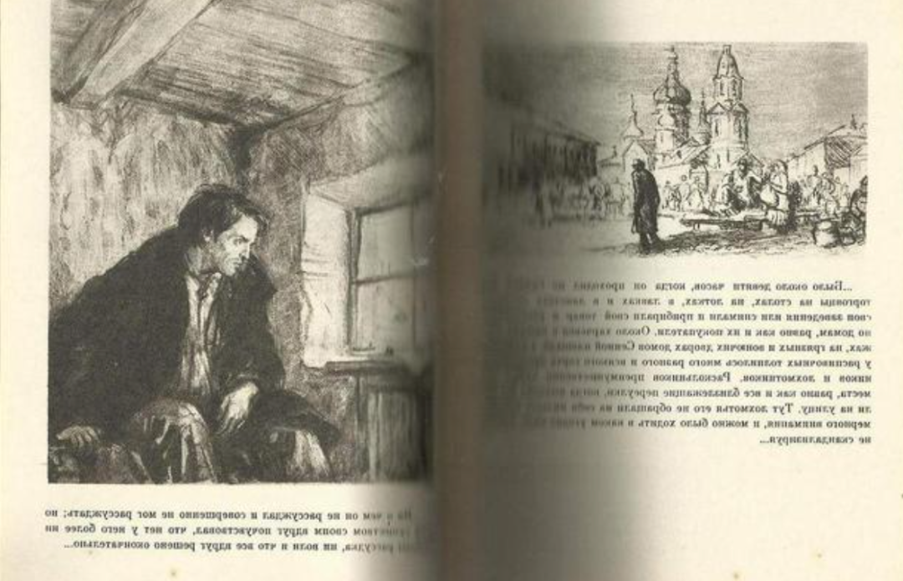

读书记录5：罪与罚
《罪与罚》是俄国作家陀思妥耶夫斯基创作的长篇小说，也是其代表作，于1866年的1月开始刊登在《俄国导报》上，1867年2月连载结束。
1 前言
当时在看这本书的时候，一度不知道这本书要讲什么，后来看着看着就明白了。在看之前就知道这是一本压抑小说，看完了后给我的影响是巨大的。
2 经典语录
- 人这种卑鄙的东西，什么都会习惯的。
- 我唯一担心的是我们明天的生活能否配得上今天所承受的苦难。
- “你为何不骂我，却拥抱我？” “因为世界没有比你更不快乐的人了。”
- 有时，一个人遇上强盗，整整半小时感到死亡的恐惧，最后，刀架到脖子上，反倒什么都不怕了。
- 大家都杀人，在世界上，现在杀人，过去也杀人，血像瀑布一样地流，像香槟酒一样地流，为了这，有人在神殿里被戴上桂冠，以后又被称作人类的恩主。
- 我只想证明一件事，就是，那时魔鬼引诱我，后来又告诉我，说我没有权利走那条路，因为我不过是个虱子，和所有其余的人一样。
- 世界上没有什么比直言不讳更难，也没有什么比阿谀奉承更容易的了。
- 要知道，女人就是这样，爱你也是她，害你也是她，两者并行不悖。
- 平凡的人必须听话，没有犯法的权利，因为，您要知道，他们是平凡的人。不平凡的人却有权犯各式各样的罪，有权任意违法，为非作歹，而这只是因为，他们是不平凡的人。
- 他是那样经常陷入沉思，离群索居，甚至还怕见到任何人。
3 良心的惩罚比苦刑更重
拉斯柯尔尼科夫，一个出身低微的法律系大学生，因为交不起学费不得不中途辍学。他生活在圣彼得堡的一个混乱不堪的街区，因为失业和极度贫困而抬不起头来，他欠了女房东一身的债，生怕见她的面，甚至也怕见任何人。
妈妈来信说，妹妹为了资助他上大学而打算嫁给一个45岁的有钱人，这件事尤其让他感到羞愧和压抑。此时，穿着破烂的拉斯柯尔尼科夫精神紧张又蔑视一切，心里充满了愤怒，能让他感受到优越感的只有他在杂志上发表的一篇描述“超人”理论的文章。
在这篇文章中，他将人分成凡人和超人两类。凡人必须俯首帖耳地生活，没有犯法的权利；而像拿破仑这样的超人，可以为了崇高的目标准许自己的良心逾越某些障碍，包括杀人。

拉斯柯尔尼科夫认为自己是一个“超人”，因此要做一桩需要胆量才能做的大事，以摆脱现在的窘迫状态。他把目光锁定在以典当谋利的老太婆身上。这个老太婆干瘪瘦小，目光尖锐凶恶，对待穷人苛刻至极，对拉斯柯尔尼科夫也是百般刁难。
他坚信，除掉这个老太婆，用她的财富来开启自己的事业，帮助更多穷困的好人，是一种正义的行为。
于是，在一个闷热的七月，拉斯柯尔尼科夫偷了房东的一把斧头，以典当物品为借口，砍死了老太婆，正当他准备逃离现场时，老太婆的妹妹突然归来。惊慌失措的拉斯柯尔尼科夫再次举起斧头…
尼采在《善恶的彼岸》里说：“真正的罪恶不在于你做了什么，而在于你对自己的行为怎么想。”
杀完人的拉斯柯尔尼科夫失魂落魄，他才明白自己根本不是什么超人，而只是个再普通不过的凡人。他无法用他的“超人”理论解释他的行为，可怕的心魔开始缠住他。
他发烧、昏睡、做噩梦、食欲不振、疑神疑鬼、整个人精神恍惚。
一个有良心的人，如果认识到自己的错误，就一定会痛苦。对他来说，这是比苦刑还重的惩罚。这个曾经很有同情心的青年，正在承受良心对他的折磨。
4 直面过错才能自我救赎
拉斯科尔尼科夫一直非常同情弱者，拥有改变社会不公的远大理想。然而，命运却以意想不到的方式将他推向了黑暗的深渊。
他原本打算用他的超人理论，以消灭剥削之名来解释他杀害老太婆的行为，但当他为了掩盖罪行，用斧子砍死了老太婆的妹妹的时候，一切都变了味，他的信念崩塌了。
拉斯柯尔尼科夫离家、杀人又悄悄地回家，全过程并没有目击者，他扔掉了凶器，妥善地藏起了从老太婆那里抢来的东西，然后就一直在出租屋里发烧和昏睡。
怀疑他的警察很同情他，也认同他的人品，坦言并不掌握任何证据，只是希望他能自首以减轻刑罚，此时，他也渐渐从最初的慌张和悔恨中苏醒过来，他平时的为人、所掌握的法律知识和逐渐冷静的神经有很大的机会帮助他瞒天过海。
可是，拉斯柯尔尼科夫过不了自己的心关。他即便能够逃脱现实的审判，却逃脱不了心中的法官对自己的审判。
在心理学经典名著《蛤蟆先生去看心理医生》有一句非常经典的话：
“没有一种批判比自我批判更强烈，也没有一个法官比我们自己更严苛。心中的法官会严厉地惩罚自己，甚至会施以极刑，即便对自己轻判，这种谴责和惩罚也可能伴随一生，变成无期徒刑。”
给拉斯柯尔尼科夫判处极刑的不是警察和法庭，而是他自己。
一个自己把自己定义为罪犯的人，每说一次谎就等同于在伤痕累累的心上再抽上一鞭子。痛苦并不可怕，逃避才是最可怕的。
一个有良知而心存善良的人，如果犯下了大的过错，只有一个办法能够救赎自己，那就是诚实地直面自己的阴暗面，为自己的错误承担应该承担的责任，哪怕这个责任是下地狱。
在掩盖罪恶的谎言中苟活，不如诚实坦荡地赴死，毕竟人活的不只是躯体，还有灵魂。
5 诚实和爱能创造奇迹
拉斯科尔尼科夫在犯罪之后，一方面很想坦白真相以摆脱内心的巨大痛苦，另一方面他也非常害怕说出真相后无法面对非常爱他的妈妈和妹妹以及可能被判以绞刑的可怕后果。
这种内心剧烈的挣扎让他掉进了深不见底的深渊之中。此时，他遇到了善良的索尼娅。索尼娅靠出卖身体养活全家，她所从事的是见不得人的职业，但她却拥有圣洁的心灵。
拉斯科尔尼科夫杀人之前，在自己已经很穷的情况下，依然把身上的铜币偷偷地留给了更加穷困的索尼雅一家，因此，索尼雅坚信拉斯科尔尼科夫是一个善良的人，她爱斯科尔尼科夫。
虽然，拉斯科尔尼科夫知道警方手里没有他杀人的罪证，但是，他爱索尼娅，他冒着失去恋人的风险，诚实地向她坦白了一切。
索尼雅鼓励拉斯科尔尼科夫去自首，她冷静地拉斯科尔尼科夫说：“甘愿受苦，藉此赎罪，这就是你应该做的。”
随后她又深情地补充道：“我们一块儿去受苦，我们一块儿戴着十字架！……我们一块儿祈祷，一块儿上路。”
索尼雅的深厚的爱，促使拉斯科尔尼科夫最终放弃了逃脱法律惩罚的心理，他鼓起勇气向警方自首…
拉斯科尔尼科夫在法庭上表达了对自己行为的深刻懊悔，他不但不为自己辩护，甚至表现出一种要加重自己罪名的愿望，这样的一种心理反倒唤醒了法庭陪审团的同情心。法庭认为他犯罪时神志不清，主动自首并真诚忏悔，还有同学证明他曾经用自己仅有的一点点钱接济过一个比他还穷的大学生…
准备赴死的拉斯科尔尼科夫在自己的诚实、索尼雅的爱和陪审团的慈悲的共同作用下，只被判决服二等苦役劳动，为期八年。
每个人都可能跌入人生的深渊，谎言和逃避只能让我们越陷越深，直面过错才能自我救赎，诚实和爱能创造奇迹！
6 个人感受
人这一生不就是为了找到一个地方，可以让自己的心灵得到救赎吗？这可能是一个地方，也可能是一件事情，也可能是一个人。罗佳犯罪后，始终过不去自己心里的那道坎，并为了受尽了内心的折磨，所以这也是上帝给他的惩罚吧，我想这也是为什么这本书叫《罪与罚》的原因吧。
在书中有很多关于人物的心理描写，甚是精彩，以后若有机会再读第二遍。人的内心真的是一个奇妙的东西，只要自己的内心充实，无论你所处的环境怎样，都不会动摇我的生活感觉。我感觉我现在就是一种自得其乐的状态，我挺喜欢的。
看了这几本书之后，愈发感觉人的灵魂和肉体其实是两个独立又统一的部分。灵魂是最重要的，倘若你的灵魂丰富，即使你的外观天生有缺陷，你也会吸引很多人和你交流，他们会被你的个人魅力吸引。如果你的外观很美很标准，但是心灵有缺陷，你是做不成事情的。
我要修炼自己的灵魂，感觉最近自己的灵魂愈发充盈，就像打游戏升级一样，等级越来越高。同时，我也要保护好自己的肉体，因为只有灵魂是没有用的，需要一个肉体去承载，去完成灵魂想要做的事情，并且肉体是灵魂状态的最佳体现。
现在我十分佩服能写出这么多优秀文学作品的作家，我觉得他们能够捕捉生活中转瞬即逝的情感变化，希望以后有机会我可以在现场见到他们，等我老了也可能学习写作吧…
 微信
微信 支付宝
支付宝